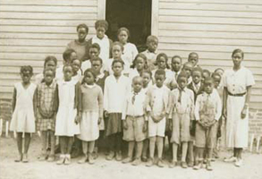

Student Name: James Lyman
Title: Brown v. Board of Education: Breaking the Barriers of Segregation
Category: Website
Word Count: [XXX] words
Multimedia Length: [X:XX] minutes
Process Paper Word Count: [XXX] words
A Landmark Decision for Equality
Photo: Library of Congress
On May 17, 1954, the United States Supreme Court unanimously ruled that racial segregation in public schools violated the Fourteenth Amendment's Equal Protection Clause. This landmark decision in Brown v. Board of Education overturned nearly sixty years of legalized segregation established by Plessy v. Ferguson in 1896.
The case began in Topeka, Kansas, where Oliver Brown challenged the school board's policy that prevented his daughter Linda from attending an all-white elementary school just blocks from their home. Instead, Linda had to travel across town to attend an all-Black school. This simple act of a father fighting for his daughter's right to equal education sparked a legal battle that would transform American society.
"We conclude that in the field of public education the doctrine of 'separate but equal' has no place. Separate educational facilities are inherently unequal." Chief Justice Earl Warren, Brown v. Board of Education, 1954
Supreme Court Opinion, 347 U.S. 483 (1954)
The Brown decision did not immediately end school segregation, but it provided the legal foundation for the civil rights movement and challenged the entire system of Jim Crow laws throughout the South. It demonstrated that the Constitution's promise of equal protection applied to all Americans, regardless of race.
Historical Significance
Brown v. Board of Education stands as one of the most important Supreme Court decisions in American history because it:
First, it rejected the legal fiction that separate could be equal, recognizing that segregation itself caused psychological and educational harm to African American children. The Court cited social science research showing that segregation made Black children feel inferior and damaged their motivation to learn.
Second, it provided the constitutional basis for dismantling Jim Crow laws across the South. While the decision specifically addressed public schools, its logic extended to all government-mandated segregation in public facilities, transportation, and accommodations.
Third, it energized the civil rights movement by demonstrating that the federal government could be a force for racial equality. The decision encouraged activists to challenge segregation through legal channels and direct action, leading to the Montgomery Bus Boycott, sit-ins, and freedom rides.
Timeline Snapshot
- 1896: Plessy v. Ferguson establishes "separate but equal"
- 1951: Oliver Brown files lawsuit in Kansas
- 1952: Case reaches Supreme Court
- 1954: Unanimous decision declared May 17
- 1955: Brown II implementation decision
Explore This Topic
Historical Context
Discover the Jim Crow era and the legal foundation of "separate but equal"
The Case
Follow the legal journey from Topeka to the Supreme Court
Key Figures
Meet the lawyers, families, and justices who shaped history
Decision & Impact
Understand the ruling and its immediate consequences
Legacy
Examine the lasting influence on American society and law